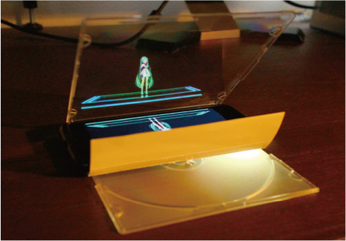
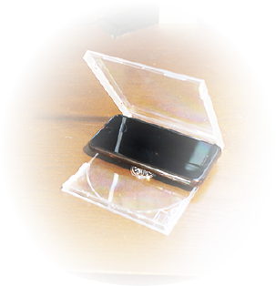
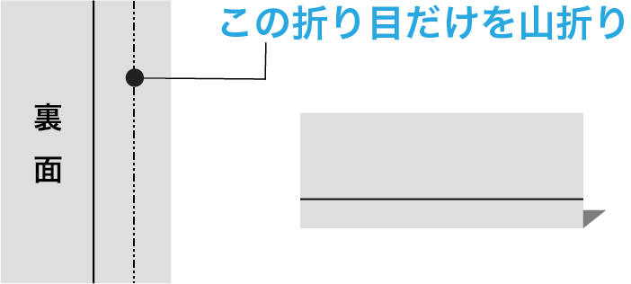

「ペッパーズゴースト」と呼ばれる仕組みを身近なモノで再現します。
●事前準備
- 空のCDケースを用意
- ニコ生アプリをインストール
- 端末の充電を100％に
- 通知類は全てオフに

●開場時刻になったら
STEP1
空のCDケースとスマートフォンをお手元にご準備の上、室内を薄暗くします。
お部屋は消灯し、デスクライトや間接照明を用いると効果的です。
お部屋は消灯し、デスクライトや間接照明を用いると効果的です。
STEP2
リンクからニコニコ生放送にアクセスします。
ニコニコ生放送の画質設定を3Mbpsに、スマートフォンの画面輝度を最大に設定します。
ニコニコ生放送の画質設定を3Mbpsに、スマートフォンの画面輝度を最大に設定します。
STEP3

CDケースを45度程度に開き、図のようにスマートフォンを噛ませて開演までお待ちください！
固定が難しい場合は、スマートフォンの両端に輪ゴムを巻くと滑りにくくなります。
固定が難しい場合は、スマートフォンの両端に輪ゴムを巻くと滑りにくくなります。
TIPS
CDの帯をお持ちの方は、図のように折ってケースに挟むと簡単に目隠しを作ることができます。
スマートフォン背面のライトを点けるとライブ感UP!!
スマートフォン背面のライトを点けるとライブ感UP!!
